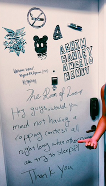

Living at Kerrey Hall
Melanie Nakhman


The RA office is on the 6th floor at an accessible point between the residential Kerrey Hall and academic University center, letting students cross between the two parts of the building without exiting. The connection on the sixth floor provides an accessible pathway from the dorm to the cafeteria where both residents and non-residents eat throughout the day.
Parsons student and current non-resident, Ashim Joshi, recalls living in the building the previous year before moving into an apartment on 13th street and 1st Avenue, “Living at Kerrey Hall I always felt like I was being babysat because of the policies that are meant to keep students safe, even though I loved the space I shared with my friends, I’m old enough to create my own rules.” Sam Nolen, a sophomore currently living at Kerrey Hall chimes in, “If I could live in an apartment I would. I'd rather live on my own where I wouldn’t have to worry about rules...it's a hindrance on how I want to live my life.”
 Some of the New School Housing policies the two Parsons students are referring to include a drug and alcohol policy that states that since Kerrey Hall is a “wet” building, meaning those above 21 may have alcohol only in their space, a guest policy limiting the amount of guests per resident in a specific time period, a fire safety policy which doesn’t allow for any fire hazards such as candles, and a quiet hours policy which requests no loud music or sounds at designated times.
Some of the New School Housing policies the two Parsons students are referring to include a drug and alcohol policy that states that since Kerrey Hall is a “wet” building, meaning those above 21 may have alcohol only in their space, a guest policy limiting the amount of guests per resident in a specific time period, a fire safety policy which doesn’t allow for any fire hazards such as candles, and a quiet hours policy which requests no loud music or sounds at designated times.
Joshi adds, “An apartment with all of the same luxuries and no policies would be much more expensive so the dorm is worth but so is the freedom. For example, I now share an apartment, have my own rules, my own bedroom, and laundry at the same price of my double last year, but I don’t get the nice view of the Empire State like I had at Kerrey Hall”
At Joshi’s comment, Nolen takes out his phone to show a current photo he’s snapped of the view out of his window on the 12th floor. Looking at the picture he remarks, “I think the cost of living here is fair for living on 5th avenue with that view. Despite the policies of the dorm, I don't think I could afford a similar apartment especially because of the location.”